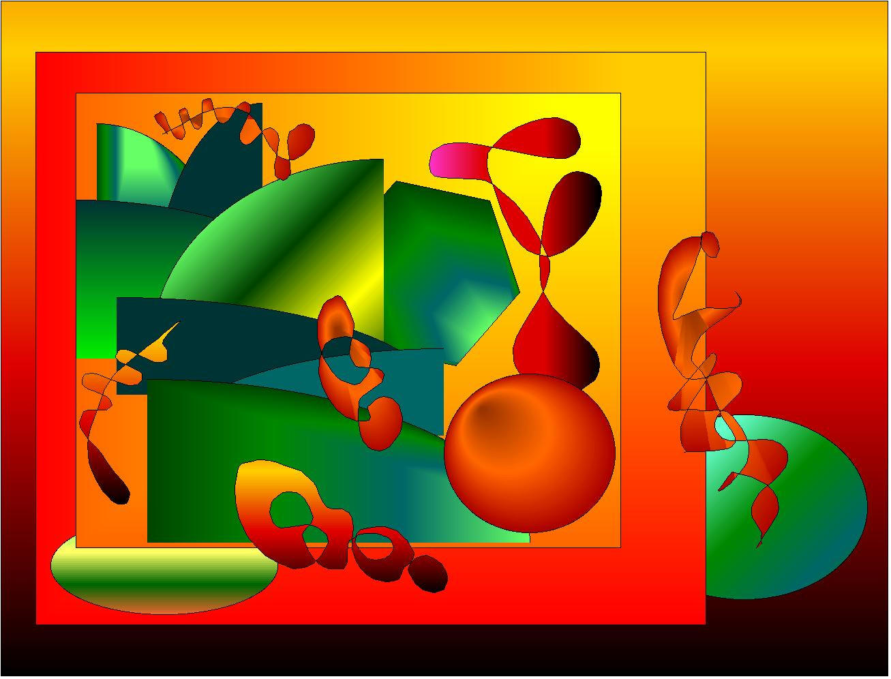
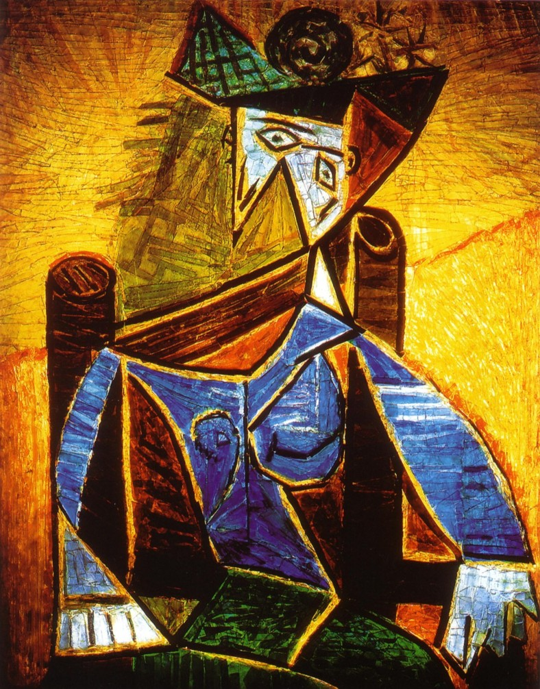
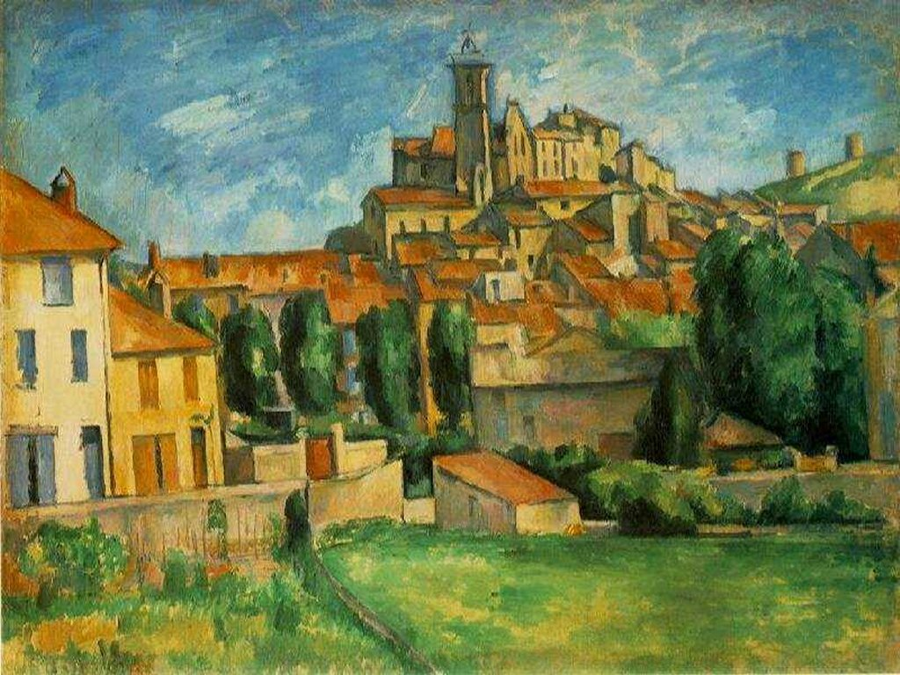
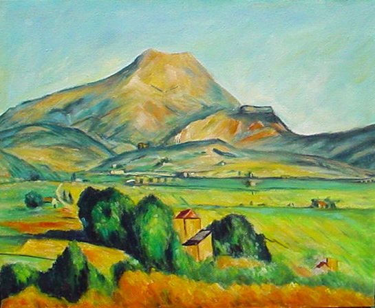
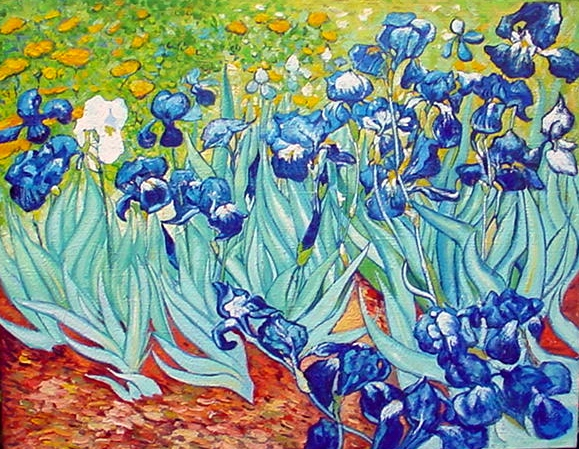
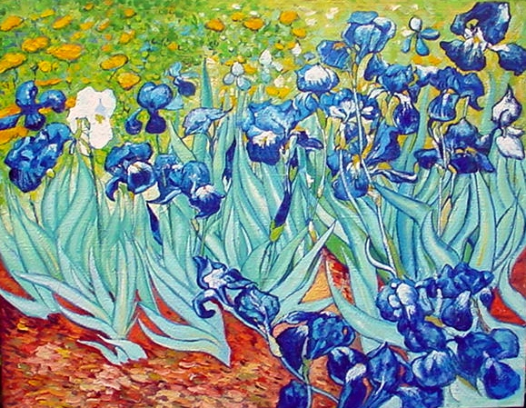
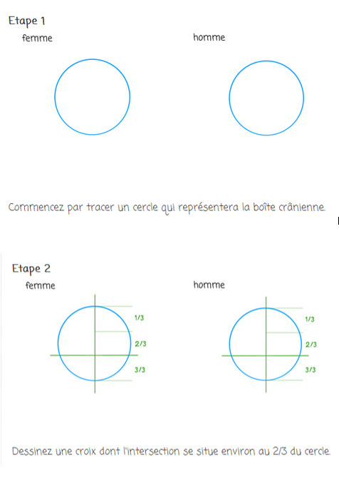
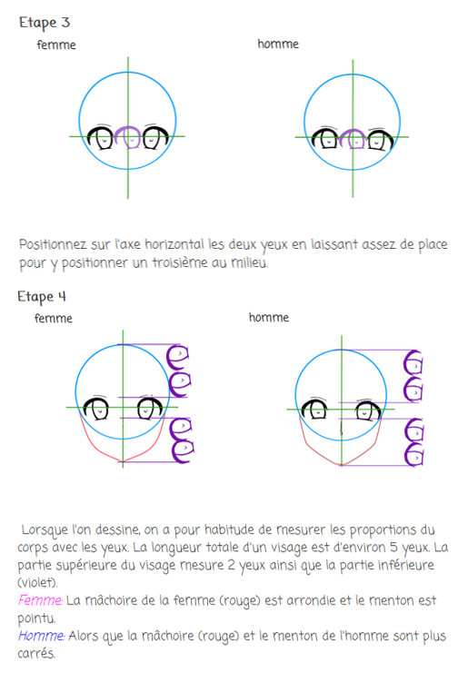
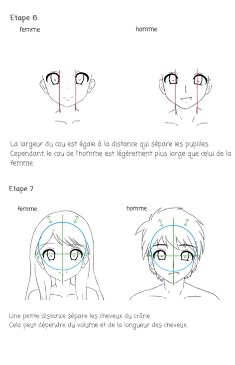
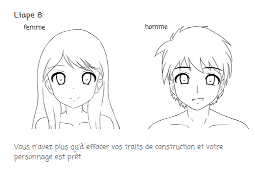

MACLASSE.COM

Voici des exemples de différents artistes, avec leur propre style.
Pablo Picasso est un artiste peintre et sculpteur. L'un des plus grands du 20ème siècle. Il réalisa 1 885 tableaux et 1 228 sculptures.
 Paul Cézanne (1839 - 1906) est un peintre français. Il a réalisé des portraits et beaucoup de paysages.
 Vincent Van Gogh est un peintre néerlandais (1853 - 1890). Il est classé dans le mouvement des impréssionnistes.
 

Le manga est une bande dessinée japonaise. Ils ont leur style bien à eux (des décors simples, les différents traits pour les personnages).
Pour faire un visage de manga suivre les diiférentes étapes :
   Le GIF permet de créer des diaporamas ou des petites animations grâce a différentes images.
Voici un diaporama pour vous apprendre a créer un GIF :
Mentions légales / Qui sommes-nous ? / Plan du site
Nos matières : français - mathématiques - histoire - sciences - arts visuels - geographie